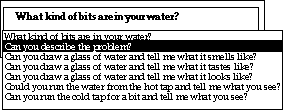

The problem with template-based parsing in Casper
There were two basic problems with the template-based parser built for the Casper Customer Service Representative (CSR) Tutor:
The template screen interface was too difficult to use,
Direct Memory Access Parsing would not work because the input text could not be effectively constrained.
Our ideal is to make the interface as transparent as possible, to make the conversation between the novice CSR and the simulated customer be as natural as possible. Our first attempt was a failure because the act of communicating via the action/domain buttons and template screens was too complicated; and, even when students succeeded in navigating the interface, the underlying domain knowledge was so disparate that parsing using DMAP usually proved untenable.
Our second attempt at building an interface, then, was based on two premises:
Make the interface as simple as possible,
Make the parser as robust as possible.
The simpler interface for Casper: a type-in box
Except for a spoken interface to Casper, the simplest design for an interface to the Casper tutor is a type-in box. The student:
Types a statement in the type-in box that corresponded to what he or she wanted to say,
Examines the result from the parser
Presses a confirmation button to make the statement, or starts over[1].
The system would parse just to that internal representation that best matched the intention of the student. Figure 5.1 shows an example type-in box.
Communicating via a type-in box
Our system design allowed us to add an additional confirmation step. After parsing, the student would confirm that the best match or one of the closest matches expressed what he or she intended to say. Table 5.1 shows this having a choice point: the student can either accept the best match, or choose one of the next best matches.
Parsing from a type-in box, accepting the best result or choosing
from the best matches
|
|
| Step
the student takes
|
What
the student sees on the screen
|
| The
student enters text and presses the "Parse" button.
|
 |
| The
parser returns the best result, but the student requests more matches.
|
 |
| The
student selects a choice from the best matches.
|
 |
| The
student confirms choice by pressing the "Say this" button.
|
 |
Types a statement in the type-in box that corresponded to what he or she wanted to say,
Examines the best result from the parser,
Accepts the best result, or chooses one of the next best results,
Presses a confirmation button to make the statement, or starts over.
The tutor then accepts the student's statement, and the conversation continues.
The parser and case-based reasoning
The parser's task has changed subtly with these new requirements. Rather than parse to the uniquely best statement (as in Creanimate), the parser is Casper can return a set of matches, ordered by how closely they match the student's intentions.
This task looks very much like a case-based reasoning task (Riesbeck & Schank 1989; Kolodner 1994). Case-based reasoning (CBR) is a paradigm for inference and problem-solving that relies on stored cases (the "case base") to make new inferences or solve new problems. In Casper, there is a case base of approximately 200 CSR statements; the task is to match a student CSR's incoming text against the case base and find the best matching statements. Table 5.2 describes the CBR algorithm abstractly (slightly modified from Jona & Kolodner 1992), and the specific requirements in Casper.
Comparison of the Casper parsing task to the general case-based
reasoning algorithm
|
||
| Step
|
Case-based
reasoning
|
Parsing
in Casper
|
| 1.
|
Accept
and analyze problem.
|
Accept
and analyze student's statement.
|
| 2.
|
Retrieve
partially matching cases in memory.
|
Retrieve
partially matching statements from memory.
|
| 3.
|
Select
most relevant cases.
|
Order
statements by how closely they match analysis.
|
| 4.
|
Construct
solution.
|
Present
best matches to student.
|
| 5.
|
Evaluate
solution.
|
Student
selects a match, or tries again.
|
| 6.
|
Execute
solution.
|
Conversation
continues.
|
The robust parsing solution we have developed on case-based reasoning principles is called indexed concept parsing. The basic idea of indexed concept parsing is to assign indices (index concepts) to conceptual representations we want to find (or target concepts). Parsing consists of looking for occurrences of references to index concepts in an input text, then using these index concepts to match to cases in the case memory. In Casper, this means assigning index concepts to each internal CSR statement, which serves as the set of target concepts. A student's statement is examined for occurrences of references to these index concepts, and the best matching CSR statements are returned. In the next sections, we describe the specifics of how indexing and matching take place in indexed concept parsing, using the parser built for the Casper tutor as an example.
Indexed concept parsing
In this section, we will describe the data structures and algorithms behind indexed concept parsing. In the general case, we assume some internal conceptual representation system for an application program. Furthermore, we'll assume that some subset of the content is of interest to us as the "output" of the parser--that is, we want to find, from this subset, the best match between what a user intends by some string and some member of this subset. We want to be able to refer to one of these data structures; we'll call these representations target concepts. In the Casper system, we want to reference one of the CSR statements, so that the system will know, for example, that when a student types, "What do the bits look like?" this is the same as the CSR statement, "What kind of bits are in your water?"
The goal, then, is to map from the string a student might type into a system with some target concept in the set of target concepts. To do this, we'll add a layer of representation between input strings and the target concepts, which we'll call index concepts. Each target concept will be associated with one or more (non-empty) sets of index concepts. For example, we might tag, in the Casper system, the canonical form "Could you please describe the bits?" with the sets of index concepts {water-bits describe} and {water-bits appear similar}. Furthermore, we will arrange these concepts in an hierarchical (isa link) network, for example, to express that water-bits isa water-quality-problem. In this way, we can assign the set {duration water-quality-problem} of index concepts to the canonical form "How long have you had the problem?" and, should the student type:
Student: How long have you had the bits?
we can recognize this as the CSR statement, "How long have you had the problem?"
Note that these index concepts are not themselves strings; they are representations. Therefore, we need methods to map from strings to index concepts, and then index concepts to target concepts. But before the parsing and matching can take place, the index concepts need to be in place.
The indexing phase
Before a case-based reasoning system can be used, indexes need to be assigned to cases. Similarly, in indexed concept parsing, index concepts need to be assigned to each potential target concept. Because the index concepts are an intermediate memory structure between input strings and target concepts, there must be a way to move from strings to indexed concepts. To accomplish this, we assign phrasal patterns to each index concept. A content specialist (knowledge engineer) is responsible for assigning index concepts to target concepts, and phrasal patterns to index concepts. In this section, we describe these two indexing steps.
Assigning index concepts to target concepts
First, each target concept is associated with one or more sets of index concepts; this is the indexing assignment phase. This task is carried out by a content specialist, perhaps aided by automated tools (see Chapter 8 for examples of these tools). Figure 5.2 shows a portion of the target concepts in Casper's conceptual memory, CSR statements and index concepts assigned to them. As part of this association, the system needs to track every target concept that each index concept is associated with; this will form the starting point for the parsing phase described below. In Chapter 7, we describe a more complete methodology for assigning index concepts and other parameters for indexed concept parsing.
After indexing, a static analysis is performed. The point of this phase is to determine how much information each index concept adds to the finding of a target concept. For example, in the Casper domain, many of the canonical forms are indexed with the concept water, but only one is indexed with the concept medical (for the canonical form "Do you need water for medical purposes?"). medical carries more information than water. In parsing a sentence such as "Is your water needed because of medical needs?" the index medical should carry more weight than the index water, because there are fewer target concepts the index medical can refer to.
The static analysis phase, then, calculates the information values of each of the indices. The information value (Salton 1988) of an index concept is , where i is the number of times the index is assigned to target concepts, and n is the number of target concepts. This is a static phase because it only needs doing once after all of the indices are associated with target concepts. The static analysis phase can be carried out automatically as index concepts are assigned to target concepts.
Assigning phrasal patterns to index concepts
Each index concept has associated with it a set of phrasal patterns. As in the phrasal patterns described in the chapter about Direct Memory Access Parsing (Chapter 3), a phrasal pattern is an ordered list of items which are words, references to conceptual representations, or attributes of conceptual representations. For example, we might associate with the index concept water-bit the phrasal patterns ("bit"), ("particle") and ("piece"), and the index concept fire-brigade the phrasal patterns ("fire brigade"), ("fire fighters"), and ("firemen"). Figure 5.2 shows some example simple phrasal patterns from Casper. More complicated phrasal patterns are possible; these are described in the next chapter, as well as in Chapter 7, where a more complete description of building an indexed concept parser is given.
The parsing phase
Once the indexing phase is complete, the parser can be used. Parsing takes place in two steps: from the input strings to index concepts, and from index concepts to target concepts.
From strings to index concepts
In the first step of parsing, the goal is to find all possible references to index concepts in the input text. The set of index concepts seen will be used, in the second parsing step, as a probe to the case memory of target concepts.
In the simplest case, we do a simple string match between any of the phrasal patterns and a user's input string; when we have a match, then we have seen an index concept. For example, suppose the student types:
Student: Any fire fighters around?
This will match to the index concept fire-brigade, because of the match to "fire fighters" in the input string.
If the phrasal patterns contain references to concepts or attributes of concepts, then another matching algorithm will be needed, such as Direct Memory Access Parsing. In any case, the output of this step should be a set of index concepts referenced in the input text.
From index concepts to target concepts
Once a pool of index concepts has been collected, we can use the pool as a probe to the case memory of target concepts. First, we need to collect potential target concepts to match. One possibility is to calculate a match score for every target concept in memory. Another possibility, and the method we used in the Casper tutor, is to collect just those target concepts which have a member of the index concept pool (or an abstraction of the member) as a member of one of its associated index concept sets. This set of target concepts we'll call the target concept pool. In algorithmic form:
To collect a target concept pool from an index concept pool:
let the target concept pool <- {}
for each index concept in the index concept pool do:
for each abstraction[2] of each index concept do:
if the abstraction is associated with some target concept's index concept set[3], then add it to the target concept pool
return the target concept pool
Appraiser functions
Having collected a pool of potential target concepts, we want to sort the pool for the best matching target concepts. We do this by defining a set of appraisers, that is, functions which compare the index concept pool to a target concept and its index concept set and return a value for the goodness of match. Further, for each of the appraisers, we assign a weight that defines how important each appraiser will be in determining the final outcome[4]. To calculate the match score, we calculate the value of each of the appraisers, times their weight, divided by the total weight. Algorithmically:
To calculate a match score between an index concept pool and a target concept:
let the match score <- 0.0
for each appraisal function do:
increment the match score by the value of the appraisal function called on the index concept pool and the target concept times the weight of the appraisal function
let the match score <- match score / total weight of the appraisal functions
return the match score
One can imagine a number of different methods to perform this match; here we will appraise the goodness of the match based on three basic metrics:
Index concepts predicted. How many of the index concepts associated with the target concept were seen in the input text?
Index concepts unpredicted. How many of the index concepts seen in the input text were not associated with the target concept?
Index concepts unseen. How many of the index concepts associated with the target concept were seen in the input text?
These metrics roughly define a Tverskian matching function (Tversky 1977), with the addition that we use the information values of the index concepts in calculating the match score.
Index concepts predicted appraiser between an index concept pool (P) and a target concept's associated index concept set (T)[5]:
The justification of this specialized definition is this: We want to say an item has been predicted if one of its specializations has been predicted (for example, if we predicted that water-quality-problem will be seen, then seeing water-bits will count for this, because water-bits is a specialization of water-quality-problem.
Index concepts unpredicted appraiser between an index concept pool (P) and a target concept's associated index concept set (T):
As in Equation 5.1, in this equation we use a specialized definition. In this case, we define a specialized definition for the set difference of P and T. Specifically, we say an index concept is an element of the set difference iff it is an element of P but not a specialization of some element of P (where an element is trivially an specialization of itself). The justification for this is the same as for the previous equation; we want to capture abstraction relationships. For example, if we see water-bits, and the predicted set contains water-quality-problem, we do not want this to lower the score as a result.
Finally, we show the appraiser for index concepts unseen.
Index concepts unseen: appraiser between an index concept pool (P) and a target concept's associated index concept set (T):
The definition of the set difference of T and P, in this case, is that an index concept is an element of the set difference iff it is an element of T but not an abstraction of some element of T (where an element is trivially an abstraction of itself). Again, the justification is that we want to capture abstraction relationships. For example, if we see water-bits we want this to count as seeing water-quality-problem.
In later chapters (Chapters 6 and 7) we will discuss other appraisal methods.
With the appraiser functions defined, we can now calculate the best N matches, where N is the acceptable set size.
To calculate the best N matches in the target concept pool:
for each target concept in the target concept pool do:
calculate the match score for the index concept pool and the target concept
sort the target concept pool by the match scores of the target concepts
return the top N target concepts
To put these algorithms together in order to do indexed concept parsing is now trivial:
To find the N best matches from a text input using indexed concept parsing:
collect the index concept pool
collect the target concept pool from the index concept pool
calculate the best N matches from the target concept pool
return the top N target concepts
In the next section, we describe an extended example of using indexed concept parsing.
An extended example
We'll now show an extended example, using a small subset of the data from the Casper domain. Table 5.3 shows the five target concepts, their canonical forms, and the index concepts associated with them. For simplicity, we assume there is only one index concept set associated with each target concept. In practice, though, we will need multiple sets to handle paraphrases such as "What do the bits look like?" for "Please describe the bits."
Example target concepts and index concepts
|
||
| Target
concept
|
Canonical
form
|
Index
concepts
|
| ASK-BITS-DESCRIPTION
|
Please
describe the bits.
|
{M-WATER-BITS
M-DESCRIPTION}
|
| ASK-PROBLEM-DESCRIPTION
|
Please
describe the problem.
|
{M-PROBLEM
M-DESCRIPTION}
|
| ASK-PROBLEM-DURATION
|
How
long have you had the problem?
|
{M-PROBLEM
M-DURATION}
|
| ASK-BLACK-BITS
|
Does
your water contain black bits?
|
{M-WATER
M-CONTAIN M-BLACK M-WATER-BITS}
|
| ASK-BURST-DURATION
|
How
long has the burst been going on?
|
{M-BURST
M-DURATION}
|
Example index concept hierarchy
Table 5.4 combines both content information and information from the static analysis phase: it shows the phrasal patterns associated with each index concept, and the information value of each index.
Example index concepts, phrasal patterns and information values
|
||
| Index
concept
|
Phrasal
patterns
|
Information
value
|
| M-PROBLEM
|
"problem"
|
1.32
|
| M-WATER-BITS
|
"bits"
"pieces" "particles"
|
1.32
|
| M-CONTAIN
|
"contain"
|
2.32
|
| M-DURATION
|
"how
long"
|
1.32
|
| M-DESCRIPTION
|
"describe"
|
1.32
|
| M-BLACK
|
"black"
|
2.32
|
| M-WATER
|
"water"
|
2.32
|
| M-BURST
|
"burst"
|
2.32
|
Let's examine how indexed concept parsing works on the following example:
Student: How long have the black particles been bothering you?
The best match for this input text is ask-problem-duration, that is, "How long have you had the problem?" We obtain the following set of index concepts (the matching phrasal patterns are shown in Table 5.5): {m-duration m-black m-water-bits}.
Index concepts referenced in "How long have the black particles been
bothering you?"
|
|
| Index
concept
|
From
phrasal pattern
|
| M-DURATION
|
"how
long"
|
| M-BLACK
|
"black"
|
| M-WATER-BITS
|
"particles"
|
Calculation of match scores for "How long have the black particles
been bothering you?"
|
||
| Target
Concept
|
Score
|
Explanation
|
| ASK-PROBLEM-DURATION
|
0.883
|
Summed
value of (M-BLACK) => 2.322 Summed value of (M-WATER-BITS M-BLACK M-DURATION) => 4.966 Unpredicted raw score = 0.532 (1 - unpredicted / seen) UNPREDICTED-SCORE score = 0.133 (Raw score * 0.250 weighting)
Summed value of NIL => 0.000 Summed value of (M-PROBLEM M-DURATION) => 2.644 Unseen raw score = 1.000 (1 - unseen / predicted) UNSEEN-SCORE score = 0.250 (Raw score * 0.250 weighting)
Summed value of (M-DURATION M-PROBLEM) => 2.644 Summed value of (M-PROBLEM M-DURATION) => 2.644 Predicted raw score = 1.000 (successfully predicted / predicted) PREDICTED-SCORE score = 0.500 (Raw score * 0.500 weighting)
Total score for target ASK-PROBLEM-DURATION = 0.883
Associated index concepts: (M-PROBLEM M-DURATION)
|
| ASK-BLACK-BITS
|
0.513
|
Summed
value of (M-DURATION) => 1.322 Summed value of (M-WATER-BITS M-BLACK M-DURATION) => 4.966 Unpredicted raw score = 0.734 (1 - unpredicted / seen) UNPREDICTED-SCORE score = 0.183 (Raw score * 0.250 weighting)
Summed value of (M-CONTAIN M-WATER) => 4.644 Summed value of (M-WATER M-CONTAIN M-BLACK M-WATER-BITS) => 8.288 Unseen raw score = 0.440 (1 - unseen / predicted) UNSEEN-SCORE score = 0.110 (Raw score * 0.250 weighting)
Summed value of (M-WATER-BITS M-BLACK) => 3.644 Summed value of (M-WATER M-CONTAIN M-BLACK M-WATER-BITS) => 8.288 Predicted raw score = 0.440 (successfully predicted / predicted) PREDICTED-SCORE score = 0.220 (Raw score * 0.500 weighting)
Total score for target ASK-BLACK-BITS = 0.513
Associated index concepts: (M-WATER M-CONTAIN M-BLACK M-WATER-BITS)
|
ASK-BITS-DESCIRPTION
|
0.442
|
Summed
value of (M-DURATION M-BLACK) => 3.644 Summed value of (M-WATER-BITS M-BLACK M-DURATION) => 4.966 Unpredicted raw score = 0.266 (1 - unpredicted / seen) UNPREDICTED-SCORE score = 0.067 (Raw score * 0.250 weighting)
Summed value of (M-DESCRIPTION) => 1.322 Summed value of (M-DESCRIPTION M-WATER-BITS) => 2.644 Unseen raw score = 0.500 (1 - unseen / predicted) UNSEEN-SCORE score = 0.125 (Raw score * 0.250 weighting)
Summed value of (M-WATER-BITS) => 1.322 Summed value of (M-DESCRIPTION M-WATER-BITS) => 2.644 Predicted raw score = 0.500 (successfully predicted / predicted) PREDICTED-SCORE score = 0.250 (Raw score * 0.500 weighting)
Total score for target ASK-BITS-DESCRIPTION = 0.442
Associated index concepts: (M-DESCRIPTION M-WATER-BITS)
|
| ASK-PROBLEM-DESCRIPTION
|
0.442
|
Summed
value of (M-DURATION M-BLACK) => 3.644 Summed value of (M-WATER-BITS M-BLACK M-DURATION) => 4.966 Unpredicted raw score = 0.266 (1 - unpredicted / seen) UNPREDICTED-SCORE score = 0.067 (Raw score * 0.250 weighting)
Summed value of (M-DESCRIPTION) => 1.322 Summed value of (M-DESCRIPTION M-PROBLEM) => 2.644 Unseen raw score = 0.500 (1 - unseen / predicted) UNSEEN-SCORE score = 0.125 (Raw score * 0.250 weighting)
Summed value of (M-PROBLEM) => 1.322 Summed value of (M-DESCRIPTION M-PROBLEM) => 2.644 Predicted raw score = 0.500 (successfully predicted / predicted) PREDICTED-SCORE score = 0.250 (Raw score * 0.500 weighting)
Total score for target ASK-PROBLEM-DESCRIPTION = 0.442
Associated index concepts: (M-DESCRIPTION M-PROBLEM)
|
| ASK-BURST-DURATION
|
0.339
|
Summed
value of (M-BLACK M-WATER-BITS) => 3.644 Summed value of (M-WATER-BITS M-BLACK M-DURATION) => 4.966 Unpredicted raw score = 0.266 (1 - unpredicted / seen) UNPREDICTED-SCORE score = 0.067 (Raw score * 0.250 weighting)
Summed value of (M-BURST) => 2.322 Summed value of (M-BURST M-DURATION) => 3.644 Unseen raw score = 0.363 (1 - unseen / predicted) UNSEEN-SCORE score = 0.091 (Raw score * 0.250 weighting)
Summed value of (M-DURATION) => 1.322 Summed value of (M-BURST M-DURATION) => 3.644 Predicted raw score = 0.363 (successfully predicted / predicted) PREDICTED-SCORE score = 0.181 (Raw score * 0.500 weighting)
Total score for target ASK-BURST-DURATION = 0.339
Associated index concepts: (M-BURST M-DURATION)
|
Evaluation of indexed concept parsing in Casper
In Chapter 2, we described measures for evaluating parsers embedded into application programs. We now describe the actual results of using these measures on the use of the parser in Casper. The following tables show the results of the beta testing of Casper on 12 customer service representative trainees who were engaged in up to six conversations with simulated customers. Table 5.7 contains descriptive statistics for the beta test of Casper.
Descriptive statistics for Casper
|
|
| Description
|
Value
|
| Number
of target concepts
|
192
|
| Number
of index concepts
|
222
|
| Number
of index concept sets
|
261
|
| Number
of phrasal patterns
|
670
|
| Ave.
number of phrasal patterns per index concept
|
3.0
|
| Ave.
number of index concept sets per target concept
|
1.4
|
| Ave.
number of phrases per index concept
|
3.0
|
| Number
of student inputs
|
492
|
| Number
of student inputs tagged with correct answers
|
457
|
| Ave.
number of correct answers per input
|
1.1
|
Accuracy measures in Casper (beta test)
|
||
| Accuracy
measures
|
i
|
%
|
| Percentage
of acceptable matches (set size = 7; best=100%)
|
407
|
82.8%
|
| Percentage
of perfect matches
|
274
|
60.2%
|
Strike rate in Casper (beta test)
|
|||
| Strike
rate
|
n
|
i
|
%
|
| First
strike rate, hierarchical menus (best=100%)
|
260
|
179
|
68.8%
|
| First
strike rate, parser using acceptable recall as measure
|
391
|
322
|
82.4%
|
| Strict
first strike rate, parser using perfect recall as measure
|
391
|
270
|
69.1%
|
Path length measures in Casper (beta test)
|
||
| Average
path length
|
n
|
length
|
| Average
path length, hierarchical menus (best=1.00)
|
260
|
1.75
|
| Average
path length, parser
|
391
|
1.28
|
In this chapter, we have described a technique for parsing called indexed concept parsing, in which references to index concepts in input text are matched against index concepts associated with target concepts in conceptual memory. The technique was described in the context of building a parser for the Casper tutor, the first system to have such a parser. The results of testing the indexed concept parser in Casper indicated two positive results. First, indexed concept parsing provided a more accurate and transparent method of parsing than did the DMAP-based parser described in Chapter 3. Second, index concept parsing provided a more transparent interface than did the existing interface based on hierarchical menus, while still providing acceptable recall rates.
Despite our optimistic appraisal of indexed concept parsing, there are certain ways in which we can predict indexed concept parsing will fail. We saw in the beta test of the Casper tutor that in approximately 20% of the time, a student did not choose one of the parser's top suggestions, and the student either needed to type in something else, or use the hierarchical menus. Furthermore, in approximately 40% of the time, the match was less than perfect--that is, the top choice presented by the parser was not accepted by the student. We'd like to improve on these results; but, before we can do this, we need to analyze these failures. An analysis of these failures, and ways to overcome them, are described in the next chapter.
[1.]As in the previous chapter, by "statement" we mean "statement or question."
[2.]Note that "each abstraction" of an index concept includes the index concept itself.
[3.]Whether or not an index concept is a member of some target concept's index concept set can be cached away as index concept sets are defined for target concepts.
[4.]To make the weighting meaningful, we must place a constraint on the appraisers that they each return a value from the same range, say, for example, the interval (0,1).
[5.]I(i) is the information value of i as defined in the previous section.
[6.]The explanations for the scores are generated from the tracking facility described in the Appendix.
[7.]The first use of an interface item--that is, either the hierarchical menus or the type-in box--formed the basis for the strike rate and path length measures in the Casper beta test.